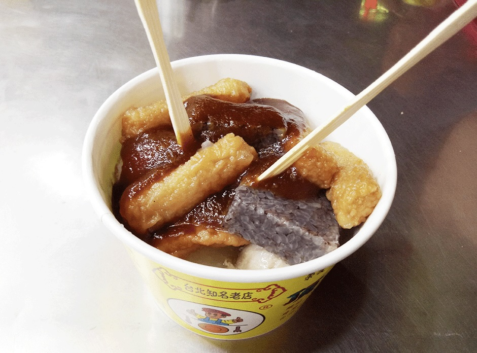

頂級甜不辣位於萬華的廣州街和梧州街交叉口，顯眼的黃色招牌和排隊人潮讓經過的遊客很難不去注意到這間甜不辣店。雖然店名叫做「甜不辣」，不過實際點一碗大份的之後才發現裡頭不只有甜不辣，還有許多配料如蘿蔔、貢丸、油豆腐、豬血糕及較少出現在甜不辣的水晶餃。而這些配料們也都大有來頭，甜不辣使用新鮮旗魚漿製成，分為片狀及條狀，相較於較小的條狀，我喜歡可以大口咬食的片狀，咀嚼的時候香氣佈滿整個口腔，再沾上店家特製的獨門沾醬更能帶出旗魚的鮮甜，十分過癮。
貢丸也是一大亮點，雖然不大顆，但是豬肉香氣十足且Q彈有勁，讓人忍不這想一顆接著一顆吃，只有兩顆實在是太少啦！最後我覺得油豆腐和湯頭的搭配實在是非常完美，頂級甜不辣的湯頭採用大量的梨山蘿蔔熬煮，而油豆腐的孔隙正好吸飽了鮮甜的湯汁，一口咬下油豆腐香與蘿蔔湯達成完美的平衡，滋味實在很美妙。每種配料約有二至三個，吃過一輪後可以試試看他們的辣醬，他們的辣醬是屬於香氣大於辣度的辣醬，加了之後為食材增添不少層次感。
吃完所有配料後我覺得才是頂級甜不辣最「頂級」的地方，記得去跟櫃台說要「加湯」，他們的蘿蔔湯沖入碗內殘餘的辣醬，微辣但又香氣十足的湯頭真的讓人想一口喝完，不過非常燙，請小心飲用。整間店唯一的缺點是價格稍貴了些，cp值不高，不過食物的品質絕對值得你來一趟！